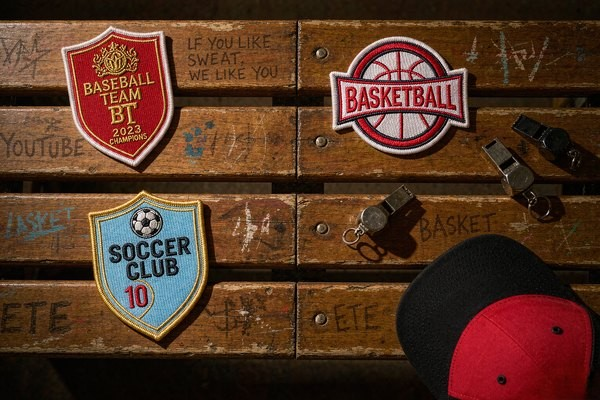
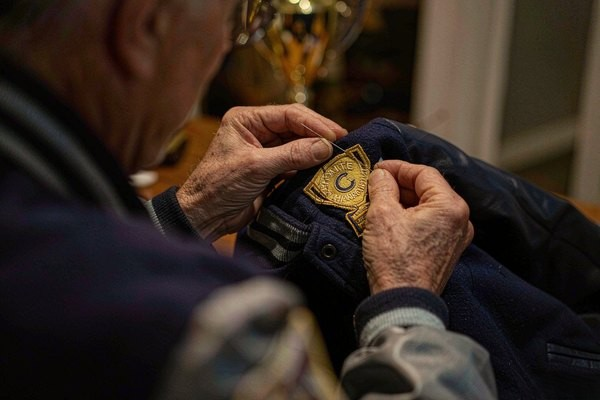

Sports Team Patches: Building Team Spirit From Field to Fans
Sports team patches do something no printed t-shirt can: they turn a roster of individuals into a team people recognize from the far side of the field. This guide covers the whole journey — what kinds of team patches exist, how to design a crest that stays legible at twenty yards, where each patch goes on a jersey or cap, which backing survives a full season of washing, and how to order for an entire league without blowing the budget.

Why Patches Carry Team Identity Better Than Print
A jersey with a stitched crest reads as a uniform. The same jersey with a screen-printed logo reads as merchandise. That difference is not snobbery — it is texture and light. Raised embroidery catches sunlight and shadow with every movement, which is exactly why military units, police forces, and professional clubs have relied on shoulder and chest patches for a century. The shoulder sleeve insignia tradition that professional and amateur sports borrowed comes straight from armies that needed to identify their own at a distance, in motion, in bad light.
Patches also outlive the garment. The American varsity letter tradition runs on exactly this property — a felt or embroidered chenille patch that migrates from jacket to jacket across generations. A champion's patch gets cut off a retired jersey and sewn onto a jacket. A club's founding-year badge migrates from kit to kit across a decade of uniform supplier changes. Print dies with the shirt; a patch accumulates history. For youth leagues and schools, that longevity matters twice — once for pride, once for the budget, because a patch bought once serves through several seasons of hand-me-down jerseys.
The Six Patches Every Sports Program Should Know
Most teams end up mixing several of these across a season:
- The primary crest. The club badge on the chest or sleeve — the one design everything else orbits. Usually embroidered, 2.5–4 inches, shield or circle shape.
- Player name and number patches. Common in baseball and hockey, where numbering must survive constant washing. Sew-on construction wins here.
- Championship and commemorative patches. Gold thread, dates, trophy motifs. These are the patches that get framed.
- Anniversary and milestone badges. "Founded 1987" or "50th Season" marks that deepen heritage without redesigning the main crest.
- Memorial patches. A ribbon, initials, or a number retired in honor of a teammate. Restrained design, dignified colors.
- Sponsor and league patches. Required by many leagues on a specified sleeve — small, regulation-sized, and worth ordering with the main kit to save a second shipping round.
The crest is where design effort belongs, because every other patch inherits its visual language. If your badge is done well, name bars and commemorative rounds practically design themselves from its colors and border style.
Designing a Crest That Reads at Twenty Yards
Team crests live in the worst possible viewing conditions: motion, distance, glare, and a camera phone zoomed to maximum. Design for the far viewer first and the close-up second. The core rules our digitizers apply to sports team patches:
- Two or three colors, maximum four. Every additional thread color adds cost and, worse, visual noise at distance. Great club crests are famously simple — think of the ones you can draw from memory.
- No text below 4 mm letter height. The math behind that limit is in our text legibility guide, and it bites team names hardest: "WOLVERHAMPTON" at patch scale needs either a bigger patch or a shorter name. Initials and a founding year often beat a full name.
- Bold borders, flat colors. A merrowed or heat-cut border in a dark tone frames the design and hides edge fraying. Gradients do not translate to thread — flat fills with contrast do.
- Symbols over words. An animal, a star, crossed sticks, a ball — icons read at distance; sentences do not. Save the wordmark for the jersey front print where space is generous.
If your logo only exists as a photo or a low-res screenshot, our logo conversion guide walks through getting it into clean vector art — which is all a manufacturer needs to digitize the crest free of charge. Coaches designing from scratch can start with the basics in our beginner design guide.

Sizes and Placement: The Practical Map
Placement failures are irreversible — a crest sewn an inch too low sits wrong for the whole life of the jersey. Use this table as the starting point, then confirm against your league's regulations, which override everything:
| Position | Typical Patch Size | Notes |
|---|---|---|
| Left chest (over heart) | 2–3 in tall | The primary crest spot for soccer, baseball, rugby |
| Left sleeve | 2–3 in | League and sponsor patches usually live here |
| Right sleeve | 2–3 in | Championship, flag, or memorial patches |
| Shoulder yoke (football/hockey) | 3–4 in | Sized up for visibility from the stands |
| Cap front | 1.5–2.5 in | 3D puff embroidery gives caps their pop — see our cap branding guide |
| Back of jacket / hem | 4–6 in | Fan jackets and staff wear, not playing kit |
Two placement rules that prevent most heartbreak: keep the crest clear of seams and plackets so a needle never fights a zipper, and mirror-check symmetry — left chest patches sit centered between the placket and the armhole seam, roughly a hand's width down from the shoulder. Full spacing formulas by garment type are in our placement guide, and exact inch-to-millimeter sizing by use case is in the patch size guide.
Backings: What Survives a Season of Washing
Sports garments get laundered harder than any other textile on earth — hot water, industrial machines, muddy cotton. The backing choice decides whether your crest looks sharp in week twelve or looks like a moth ate it.
| Backing | Best For | Season Survival |
|---|---|---|
| Sew-on | Playing kit, anything washed weekly | Excellent — stitches flex with the fabric |
| Iron-on | Fan jackets, caps, tote bags | Good with a stitch reinforcement for kit use |
| Velcro (loop backing) | Training bibs, tactical and staff gear | Excellent — patch swaps between garments |
| Adhesive | One-day events only | Poor — one wash and it peels |
The trade-offs are laid out fully in our backing types guide, but the short version for team buyers: iron-on for presentation wear, sew-on for anything that enters a washing machine weekly. Many programs order the same crest with iron-on backing for coaches' jackets and sew-on backing for player kits — it is the same digitized file, so the second run costs less than the first.
Thread choice matters as much as backing. Polyester thread holds color through chlorine-adjacent wash cycles and UV exposure that fades rayon within a season — the full comparison is in our thread types guide. For championship badges, metallic gold thread delivers the trophy-room shine, though we recommend reserving it for commemorative patches rather than weekly-kit crests, since metallic thread is the first to show wear.

Ordering for a Whole Roster Without Budget Shock
Team ordering has a math problem individual buyers never face: sizes vary by position, and quantities change when the season roster does. Three habits keep it painless:
- Order the crest once, in bulk, per season. A single run of 25–40 identical crests costs far less per patch than three small top-up orders. Keep a few spares — rosters grow, jerseys tear.
- Standardize the design, vary only what must vary. One crest file with sew-on backing for kit, iron-on for staff, produces two SKUs from one digitizing fee.
- Order 8–10 weeks before season start. Design revision, digitizing, sampling, production, and shipping take real time, and late orders pay rush fees that often exceed the patch cost itself.
Schools and non-profits should also think past the team: leftover crests sell at fundraisers, sew onto spirit-wear, and turn alumni into walking sponsors. The identity logic that makes corporate logo patches work for companies works identically for a club badge — the patch is a tiny billboard people choose to wear.
One compliance note for competitive play: most sanctioned leagues regulate patch size, placement, and even thread sheen, and some championship insignia designs are protected marks. Check the rulebook before finalizing artwork — replacing a season of already-sewn crests is the most expensive mistake in this whole guide.
Frequently Asked Questions (FAQ)
Q1: What size should a sports team crest patch be?
For most playing kits, 2.5–3 inches tall for a chest crest and 2–3 inches for sleeve patches works well. Shoulder yoke patches on football and hockey jerseys run 3–4 inches for stand visibility. Always confirm your league's regulations first — sanctioned play often specifies exact dimensions.
Q2: Embroidered, woven, or PVC — which is best for team patches?
Embroidered is the classic choice for crests: textured, durable, traditional. Woven patches win when the design has small text or fine detail that embroidery cannot render at patch size. PVC suits wet-weather and mud-heavy sports where a wipe-clean badge helps. For most clubs, embroidered crests with sew-on backing are the proven combination.
Q3: Iron-on or sew-on for jerseys that get washed every week?
Sew-on. Weekly hot-water laundering eventually lifts even a well-fused iron-on patch, while stitched patches flex with the fabric and outlast the jersey itself. Iron-on backing remains perfect for coaches' jackets, caps, and fan gear that sees gentler washing.
Q4: How many team patches should we order?
Count the roster, add the coaching and staff set, then add 10–15% spares for mid-season additions and damaged jerseys. A typical youth team of 18 players orders 25–30 crests. Because the digitizing fee is amortized across the run, larger quantities drop the per-patch price significantly.
Q5: Can you match our exact team colors in thread?
Yes — send Pantone or hex color codes with your artwork and we match them to the closest thread shades, then confirm on a digital proof before production. Deep maroon, navy, and kelly green are especially well covered by polyester thread ranges. The 12-hour proof shows the color mapping so nothing surprises you.
Conclusion: One Crest, a Whole Identity
A good team crest is the cheapest branding a sports program will ever buy and the most permanent. Design it simple enough to read from the bleachers, back it for the washing machine it will actually meet, place it once and correctly, and order enough to cover the roster that shows up in October. Do that, and the patch outlives jerseys, seasons, and half the players who wore it.
Send us your club badge — or a napkin sketch of what it should be — and we will digitize it free, match your colors, and return a proof within 12 hours. No minimum order, so even a five-a-side crew can look like a club. Request a free quote and give your team something to sew on.